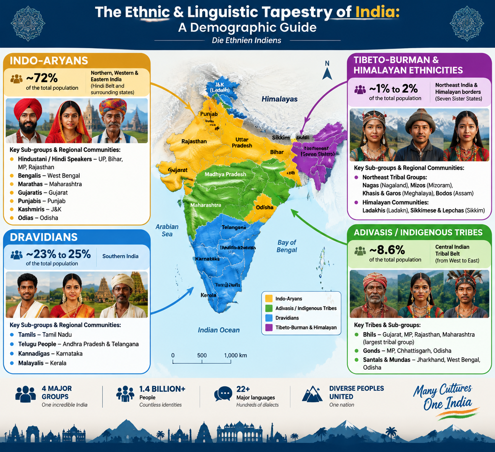

Ein tiefer Einblick in das historisch gewachsene, demografische und kulturelle Mosaik des indischen Subkontinents.
Die nachfolgende Grafik verdeutlicht die geografische Verteilung sowie das visuelle Erscheinungsbild der Hauptgruppen.

↔️ Wische nach links oder rechts, um die vollständige Karte mit Details zu betrachten.
Größte ethnolinguistische Familie
Die indoarischen Sprachen stammen historisch vom Sanskrit ab. Die Vorfahren wanderten ab ca. 1500 v. Chr. schrittweise aus Zentralasien in den Norden Indiens ein und vermischten sich im Laufe der Jahrtausende stark mit der ansässigen Bevölkerung. Früher lebten sie primär in agrarischen Großreichen entlang der fruchtbaren Ganges-Ebene.
Heute prägen sie das wirtschaftliche und politische Herzland Nord-, West- und Ostindiens. Ihre Lebensweise reicht von hochentwickelten urbanen Metropolen (wie Mumbai, Delhi, Kalkutta) bis hin zu dicht besiedelten Agrardörfern.
Prägung durch große hinduistische Epen (Ramayana, Mahabharata). Spezifische Feste wie Holi, Diwali und Durga Puja (besonders in Bengalen) sowie hochentwickelte klassische Musiksysteme (Hindustani-Musik) und reiche Textiltraditionen.
Die Ur-Siedler des Südens
Die dravidische Urbevölkerung war bereits vor der indoarischen Migration auf dem Subkontinent präsent und wird in der Forschung stark mit der hochentwickelten, antiken Indus-Kultur in Verbindung gebracht. Durch das Vordringen der Indoarier von Norden her verlagerte sich ihr Hauptsiedlungs- und Kulturraum dauerhaft in den Süden Indiens. Ihr Bevölkerungsanteil war historisch vor Jahrtausenden prozentual höher und hat sich seither im Süden stabilisiert.
Die dravidisch geprägten Bundesstaaten gehören heute zu den fortschrittlichsten Regionen des Landes. Sie zeichnen sich durch den höchsten Bildungsstand, eine hohe Alphabetisierungsrate (besonders in Kerala) und eine starke technologische Entwicklung aus, darunter weltbekannte IT-Zentren wie Bengaluru und Hyderabad.
Die Draviden besitzen mit der Sangam-Literatur eine der ältesten ununterbrochenen klassischen Literaturtraditionen der Welt. Kulturelle Auffälligkeiten sind die monumentalen, farbenfrohen Tempelanlagen im Dravida-Stil, der klassische Tanz Bharatanatyam sowie das mehrtägige, farbenprächtige Erntedankfest Pongal.
Indigene Stammesbevölkerung
Der Name bedeutet wörtlich „erste Einwohner“. Sie bilden die älteste nachweisbare ethnische Schicht des Landes. Historisch lebten die Adivasi weitgehend autark und vom Kastensystem unberührt als Jäger, Sammler und Brandrodungsbauern in den dichten Wäldern und unzugänglichen Bergketten des indischen Kernlands. Ihr Anteil an der Gesamtbevölkerung sank im Zuge der historischen Expansion anderer Kulturen, blieb in ihren Rückzugsgebieten aber dominant.
Heute sind die Adivasi offiziell als „Scheduled Tribes“ geschützt. Während viele Gemeinschaften zunehmend in die moderne Wirtschaft und das Bildungssystem integriert sind, kämpfen andere in ihren angestammten Regionen mit dem Verlust von Lebensraum durch Industrialisierung und Bergbau. Sie bewahren dennoch eine bemerkenswert egalitäre Sozialstruktur.
Die Kultur ist stark von Animismus und einer tiefen Naturverehrung geprägt, die oft mit hinduistischen Elementen verschmilzt. Berühmt sind die Adivasi für ihre einzigartige Kunst (wie die farbenfrohe Gond-Malerei), rhythmische Stammestänze, kollektive Dorffeste und das Fehlen der im restlichen Indien üblichen hierarchischen Kastenstrukturen.
Die ethnische Brücke nach Asien
Diese Gruppen stammen aus historischen ost- und südostasiatischen Migrationswellen, die über das tibetische Hochplateau und die birmanischen Gebirgspässe nach Indien gelangten. In den abgeschiedenen Tälern des Himalayas und des Nordostens („Seven Sister States“) blieben sie über Jahrhunderte weitgehend isoliert vom restlichen indischen Kulturraum, wodurch sich ihre eigenständigen Sprachen und Phänotypen erhielten.
Heute durchläuft die Region eine rasche Modernisierung. Die Gemeinschaften legen jedoch extremen Wert auf politische Autonomie und den Schutz ihrer indigenen Identität. Die Lebensweise ist stark gemeinschaftsorientiert und von der Berglandwirtschaft sowie modernen Dienstleistungen geprägt.
Die Region weist eine enorme Vielfalt an sinotibetischen Sprachen auf. Eine absolute Besonderheit bilden die Khasi in Meghalaya, die bis heute ein traditionelles matriarchales Gesellschaftssystem pflegen (Erbfolge und Name werden über die weibliche Linie weitergegeben). Kulturell sind die Gruppen im Nordosten heute mehrheitlich christlich, während im rauen Norden (Ladakh) der tibetische Buddhismus das tägliche Leben bestimmt.